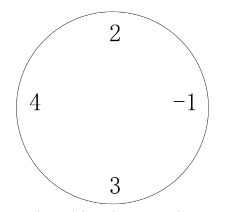

丁丁最近沉迷于一个数字游戏之中。这个游戏看似简单，但丁丁在研究了许多天之后却发觉原来在简单的规则下想要赢得这个游戏并不那么容易。游戏是这样的，在你面前有一圈整（一共 $n$ 个），你要按顺序将其分为 $m$ 个部分，各部分内的数字相加，相加所得的 $m$ 个结果对 $10$ 取模后再相乘，最终得到一个数 $k$。游戏的要求是使你所得的 $k$ 最大或者最小。
例如，对于下面这圈数字（$n=4$，$m=2$）：

当要求最小值时，$((2-1) mod 10)×((4+3) mod 10)=1×7=7$，要求最大值时，为 $((2+4+3)mod 10)×(-1 mod 10)=9×9=81$。特别值得注意的是，无论是负数还是正数，对 $10$ 取模的结果均为非负值。
丁丁请你编写程序帮他赢得这个游戏。
 Comet OJ
Comet OJ